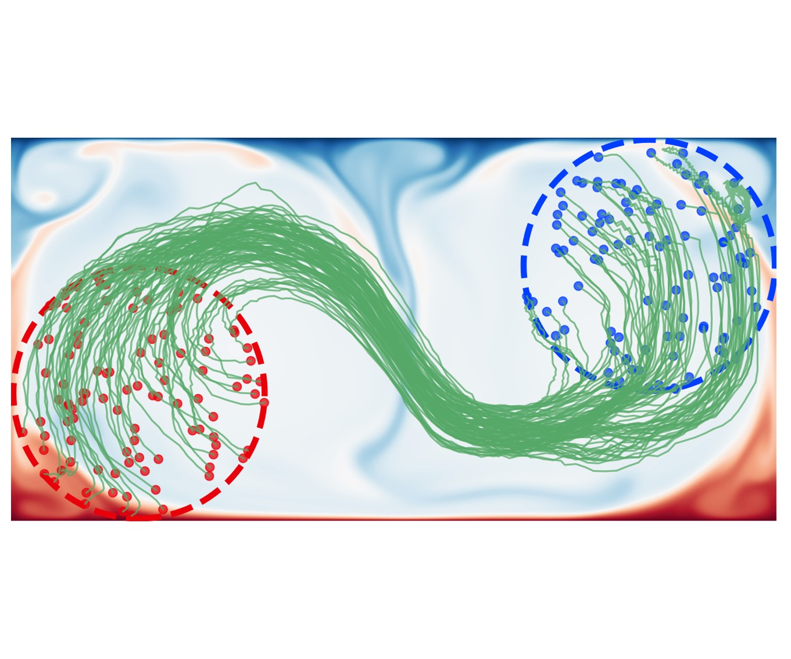
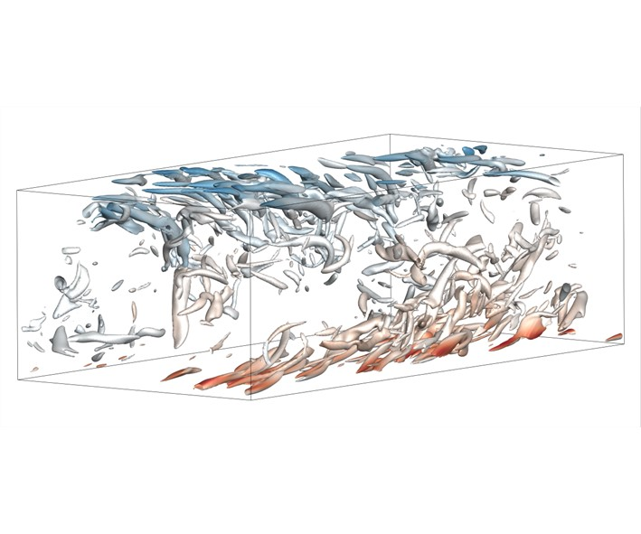
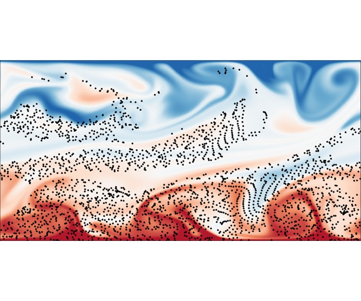
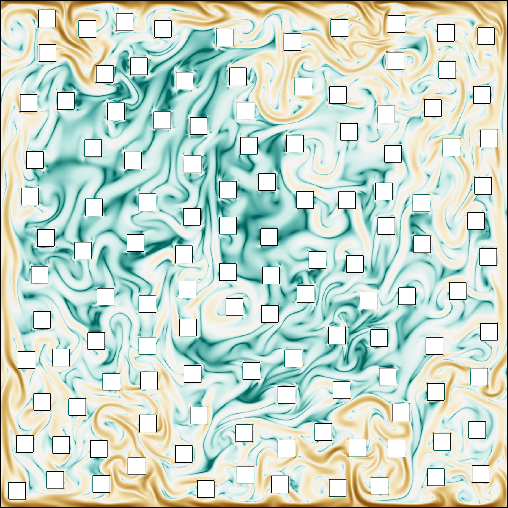
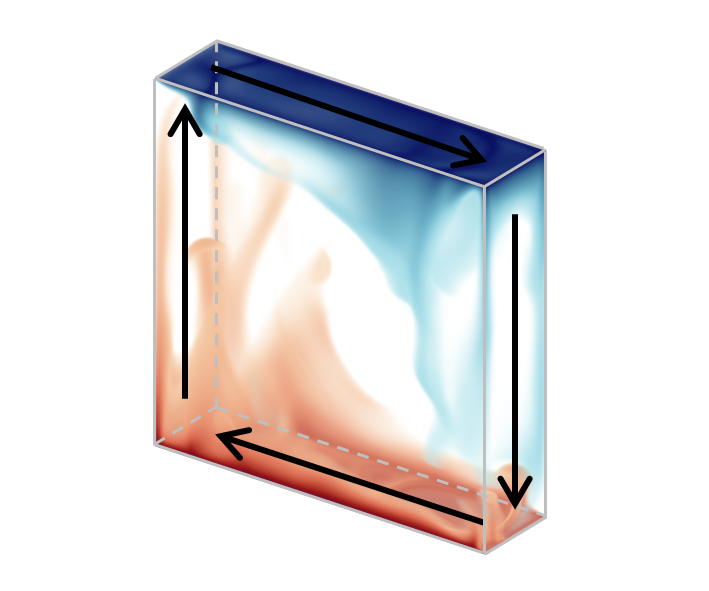
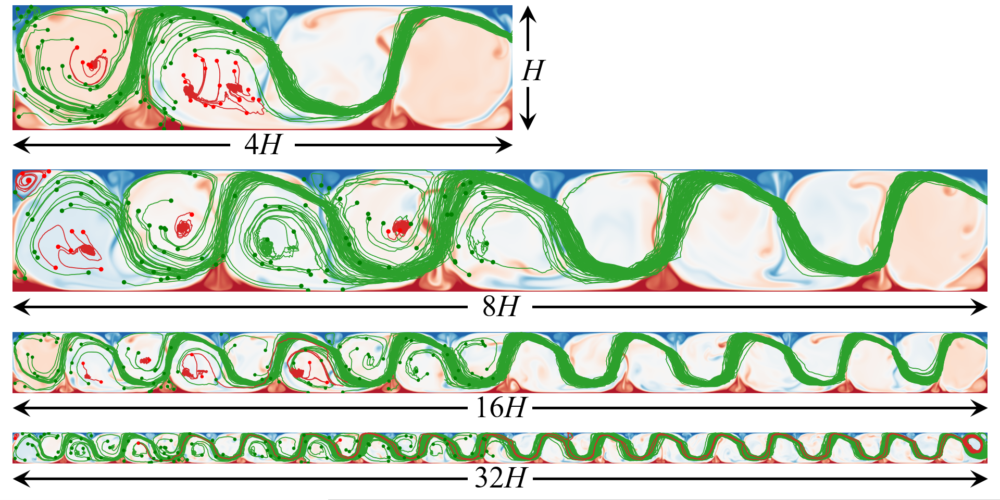
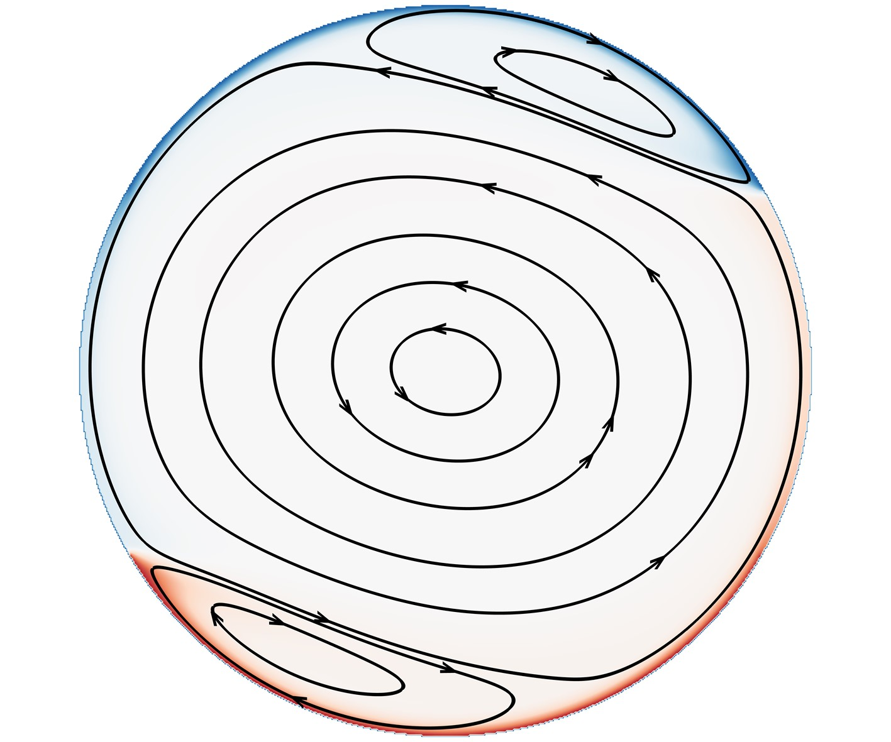

Publications
Journal Papers
Int. J. Heat Mass Transf.0+0
J. Fluid Mech.0+0
Phys. Fluids0+0
Phys. Rev. Fluids0+0
Int. J. Heat Fluid Flow0+0
X + Y X = First or Corresponding Author; Y = Co-author
Submitted / Under Review
-
Learning to traverse convective flows at moderate to high Rayleigh numbersSubmitted 2026.Submitted
-
Wall-modeled large eddy simulation of turbulent channel flow with unstable stratificationSubmitted 2026.Submitted
-
Velocity dip in turbulent mixed convection of an open Poiseuille-Rayleigh-Bénard channelSubmitted 2026.Submitted PDF
Published
-
Super-resolution reconstruction of turbulent flows from a single Lagrangian trajectoryJournal of Fluid Mechanics 2026, 1026, A46.
-
Interpolation-supplemented lattice Boltzmann simulation of thermal convection on non-uniform meshesInternational Journal of Heat and Mass Transfer 2026, 255, 127790.
-
Temporal modulation on mixed convection in turbulent channelsJournal of Fluid Mechanics 2025, 1006, A11.
-
Particle transport and deposition in wall-sheared thermal turbulenceJournal of Fluid Mechanics 2024, 999, A15.
-
Prandtl-number dependence of flow topology in quasi-two-dimensional turbulent Rayleigh-Bénard convectionJournal of Fluid Mechanics 2024, 991, A14.
-
Particle-resolved thermal lattice Boltzmann simulation using OpenACC on multi-GPUsInternational Journal of Heat and Mass Transfer 2024, 218, 124758.
-
Pore-scale statistics of temperature and thermal energy dissipation rate in turbulent porous convectionPhysical Review Fluids 2023, 8 (9), 093504.
-
The effect of the cell tilting on the temperature oscillation in turbulent Rayleigh-Bénard convectionPhysics of Fluids 2023, 35 (8), 085141.
-
Wall-sheared thermal convection: heat transfer enhancement and turbulence relaminarizationJournal of Fluid Mechanics 2023, 960, A2.
-
Long-distance migration with minimal energy consumption in a thermal turbulent environmentPhysical Review Fluids 2023, 8 (2), 023502.
-
Multi-GPU thermal lattice Boltzmann simulations using OpenACC and MPIInternational Journal of Heat and Mass Transfer 2023, 201, 123649.
-
Charge-induced proton penetration across two-dimensional clay materialsNanoscale 2022, 14, 6518-6525.
-
Migration of self-propelling agent in a turbulent environment with minimal energy consumptionPhysics of Fluids 2022, 34 (3), 035117.
-
Production and transport of vorticity in two-dimensional Rayleigh-Bénard convection cellPhysics of Fluids 2022, 34 (1), 013609.
-
Counter-flow orbiting of the vortex centre in turbulent thermal convectionJournal of Fluid Mechanics 2022, 935, A19.
-
Unraveling the hydroxide ion transportation mechanism along the surface of two-dimensional layered double hydroxide nanosheetsJournal of Physical Chemistry C 2021, 125 (2), 1240-1248.
-
Tristable flow states and reversal of the large-scale circulation in two-dimensional circular convection cellsJournal of Fluid Mechanics 2021, 910, A33.
-
Correlation of internal flow structure with heat transfer efficiency in turbulent Rayleigh-Bénard convectionPhysics of Fluids 2020, 32 (10), 105112.
-
Transport and deposition of dilute microparticles in turbulent thermal convectionPhysics of Fluids 2020, 32 (8), 083301.
-
Unraveling the water-mediated proton conduction mechanism along the surface of graphene oxideChemistry of Materials 2020, 32 (14), 6062-6069.
-
A curved lattice Boltzmann boundary scheme for thermal convective flows with Neumann boundary conditionInternational Journal of Heat and Mass Transfer 2020, 150, 119345.
-
Anomalous proton conduction behavior across nanoporous two-dimensional conjugated aromatic polymer membranePhysical Chemistry Chemical Physics 2020, 22 (5), 2978-2985.
-
Statistics of temperature and thermal energy dissipation rate in low-Prandtl number turbulent thermal convectionPhysics of Fluids 2019, 31 (12), 125101.
-
Ether-group-mediated aqueous proton selective transfer across graphene-embedded 18-crown-6 ether poresJournal of Physical Chemistry C 2019, 123 (45), 27429-27435.
-
Lattice Boltzmann simulations of three-dimensional thermal convective flows at high Rayleigh numberInternational Journal of Heat and Mass Transfer 2019, 140, 359-370.
-
A two-dimensional mathematical model for vanadium redox flow battery stacks incorporating nonuniform electrolyte distribution in the flow frameApplied Thermal Engineering 2019, 151, 495-505.
-
First-principle investigations of nitrogen-, boron-, phosphorus-doped graphite electrodes for vanadium redox flow batteriesElectrochimica Acta 2019, 300, 389-395.
-
Aqueous proton-selective conduction across two-dimensional graphyneNature Communications 2019, 10, 1165.
-
Thermal effects on the sedimentation behavior of elliptical particlesInternational Journal of Heat and Mass Transfer 2018, 126, 753-764.
-
Three-dimensional carbon-honeycomb as nanoporous lithium and sodium deposition scaffoldJournal of Physical Chemistry C 2018, 122 (37), 21262-21268.
-
Lattice Boltzmann simulation of mass transfer coefficients for chemically reactive flows in porous mediaJournal of Heat Transfer-Transactions of the ASME 2018, 140 (5), 052601.
-
A paper-based microfluidic fuel cell with hydrogen peroxide as fuel and oxidantEnergy Technology 2018, 6 (1), 140-143.
-
Lattice Boltzmann simulation of shear viscosity of suspensions containing porous particlesInternational Journal of Heat and Mass Transfer 2018, 116, 969-976.
-
Theoretical understanding of mechanisms of proton exchange membranes made of 2D crystals with ultrahigh selectivityJournal of Physical Chemistry Letters 2017, 8 (18), 4354-4361.
-
Lattice Boltzmann modeling of transport phenomena in fuel cells and flow batteriesActa Mechanica Sinica 2017, 33 (3), 555-574.Invited Review Paper, ESI Highly Cited Paper
-
Accelerated lattice Boltzmann simulation using GPU and OpenACC with data managementInternational Journal of Heat and Mass Transfer 2017, 109, 577-588.
-
First-principles investigations of the working mechanism of 2D h-BN as an interfacial layer for the anode of lithium metal batteriesACS Applied Materials & Interfaces 2017, 9 (2), 1987-1994.
-
Ab initio prediction of a silicene and graphene heterostructure as an anode material for Li- and Na-ion batteriesJournal of Materials Chemistry A 2016, 4 (42), 16377-16382.
-
Three-dimensional lattice Boltzmann simulation of suspensions containing both micro- and nanoparticlesInternational Journal of Heat and Fluid Flow 2016, 62, 560-567.
-
Unraveling the catalytic mechanism of rutile RuO2 for the oxygen reduction reaction and oxygen evolution reaction in Li-O2 batteriesACS Catalysis 2016, 6 (9), 6285-6293.
-
Ab initio prediction of borophene as an extraordinary anode material exhibiting ultrafast directional sodium diffusion for sodium-based batteriesScience Bulletin 2016, 61 (14), 1138-1144.Cover Page, Highlighted by EurekAlert!, Best Cover Award, Best Paper Award
-
RuO2 monolayer: A promising bifunctional catalytic material for nonaqueous lithium-oxygen batteriesJournal of Physical Chemistry C 2016, 120 (12), 6356-6362.
-
Formation of Li3O4 nano particles in the discharge products of non-aqueous lithium-oxygen batteries leads to lower charge overvoltagePhysical Chemistry Chemical Physics 2015, 17 (44), 29859-29866.
-
A three-dimensional pseudo-potential-based lattice Boltzmann model for multiphase flows with large density ratio and variable surface tensionInternational Journal of Heat and Fluid Flow 2015, 56, 261-271.
{kind=link}
Journal Metrics
| Full Journal Title | Abbrev (ISO) | ISSN | IF | CAS Ranking (中科院分区) | JCR Category (Q) |
|---|---|---|---|---|---|
| Acta Mechanica Sinica | Acta Mech. Sin. | 0567-7718 | 4.6 | (大类) 工程技术2区; (小类) 工程:机械2区; 力学2区 | Engineering, Mechanical (Q1); Mechanics (Q1) |
| Applied Thermal Engineering | Appl. Therm. Eng. | 1359-4311 | 6.4 | (大类) 工程技术2区Top; (小类) 热力学1区; 力学2区; 工程:机械2区; 能源与燃料3区 | Thermodynamics (Q1); Engineering, Mechanical (Q1); Mechanics (Q1); Energy & Fuels (Q2) |
| International Journal of Heat and Fluid Flow | Int. J. Heat Fluid Flow | 0142-727X | 2.6 | (大类) 工程技术3区; (小类) 工程:机械3区; 力学3区; 热力学3区 | Mechanics (Q2); Thermodynamics (Q2) |
| International Journal of Heat and Mass Transfer | Int. J. Heat Mass Transf. | 0017-9310 | 5.2 | (大类) 工程技术2区; (小类) 热力学2区; 工程:机械2区; 力学2区 | Mechanics (Q1); Thermodynamics (Q1) |
| Journal of Fluid Mechanics | J. Fluid Mech. | 0022-1120 | 3.7 | (大类) 工程技术2区; (小类) 物理:流体与等离子体1区; 力学2区 | Mechanics (Q1); Physics, Fluids & Plasmas (Q1) |
| Physics of Fluids | Phys. Fluids | 1070-6631 | 4.6 | (大类) 工程技术2区; (小类)物理:流体与等离子体2区; 力学2区 | Physics, Fluids & Plasmas (Q1); Mechanics (Q1) |
| Physical Review Fluids | Phys. Rev. Fluids | 2469-990X | 2.7 | (大类) 物理与天体物理3区; (小类)物理:流体与等离子体2区; 力学3区 | Physics, Fluids & Plasmas (Q2) |
Metrics Source: 2024 Journal Citation Reports® & 2025 CAS Journal Ranking (中科院文献情报中心期刊分区表).
Impact Factor: all citations to the journal in the current JCR year to items published in the previous two years, divided by the total number of scholarly items published in the journal in the previous two years.
Cited Half-Life: Median age of the articles that were cited in the JCR year.
Impact Factor: all citations to the journal in the current JCR year to items published in the previous two years, divided by the total number of scholarly items published in the journal in the previous two years.
Cited Half-Life: Median age of the articles that were cited in the JCR year.